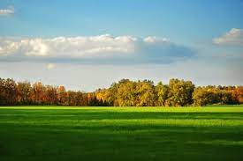

 Land use and land cover (LULC) under improper land management is a major challenge in Unguja regions and has drastically affected ecological security. Addressing environmental impacts related to this challenge requires efficient planning strategies based on the measured information of land use patterns. This study assessed the ecological risk index (ERI) of Unguja Island based on LULC. A random forest classifier was used to classify Two Lands at images of Unguja for the years 2011and 2020. Then, a land change model was employed to simulate the LULC changes for 2027 under a business-as-usual (BAU), conservation, and extreme scenarios. Results showed that the built-up areas and farmland of Unguja Island have increased constantly, while the natural grassland and forest cover have decreased. The forest, agricultural, and grassland were highly fragmented into several small patches. The ERI of Unguja Island increased at a constant rate and, if the current trend continues, this index will increase by up to 8.9% in 2027 under an extreme scenario. If a conservation scenario is adopted, the ERI will increase by 4.6% whereas if a BAU policy is followed, this value will increase by 6.2%. This study provides authorities with useful information to understand better the ecological processes and LULC dynamics and prevent unmanaged growth and haphazard development of informal housing and infrastructure